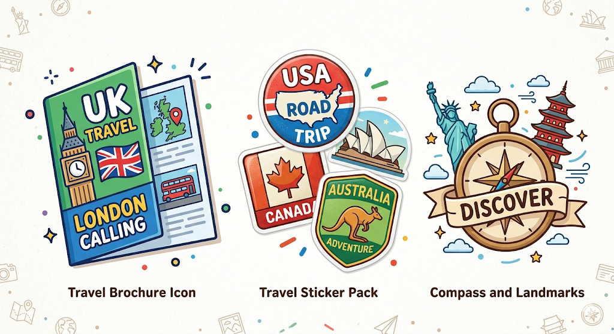

Producto final
El producto final de esta situación de aprendizaje se trata de un folleto de viajes sobre algún país de habla inglesa. Los alumnos deben buscar información, realizar el folleto y hacer la presentación oral utilizando herramientas digitales.
La herramienta propuesta para que el alumnado realice su producto final es Canva. Los alumnos deben preparar el producto final y su posterior presentación al resto de la clase usando esta herramienta. Se trata de un grupo de 3ºESO y en el centro disponemos de ordenadores portátiles para el uso estudiantil con conexión a internet para que puedan preparar su tarea y de pizarra digital para que después puedan presentarlo al resto del grupo.
El motivo de elección se debe a que Canva dispone de una opción gratuita y segura para docentes y alumnos, Canva PRO para educación. Es una herramienta intuitiva, fácil de usar y con un repositorio de plantillas para que los alumnos puedan utilizar. Los resultados quedan profesionales, y a los alumnos les suele gustar.

Imagen generada con Gemini AI
Contenido DUA
Audio de ayuda al texto.
El audio ha sido generado con luvvoice.com